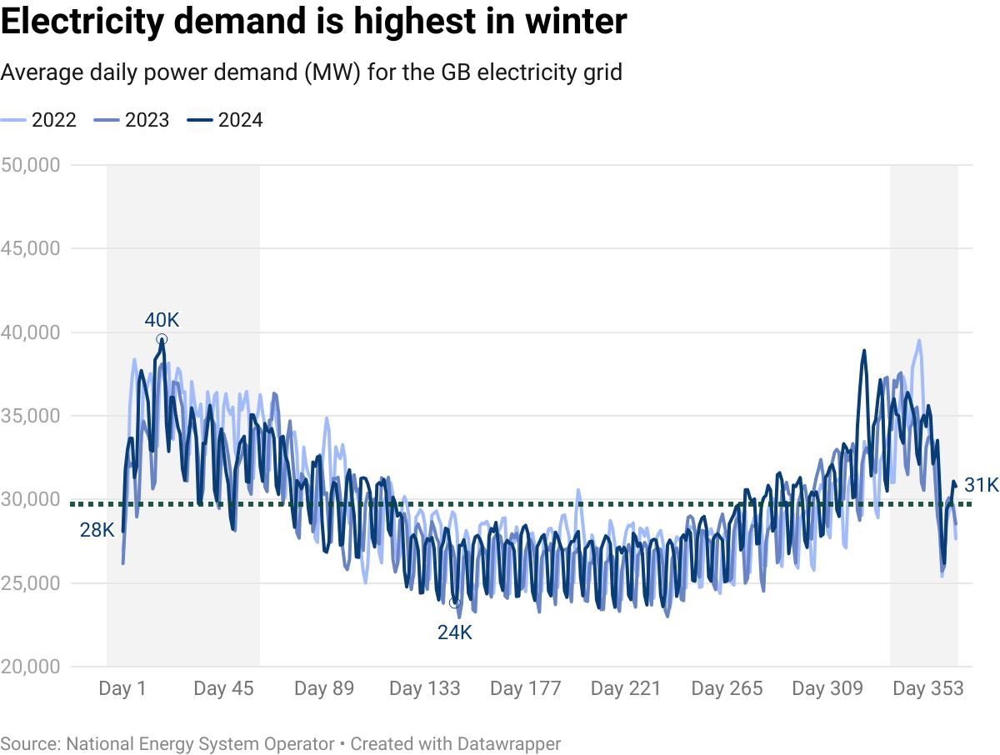
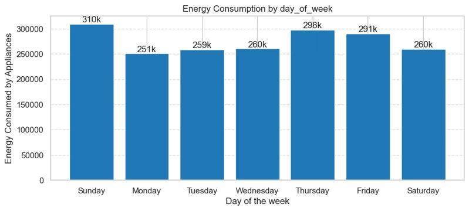
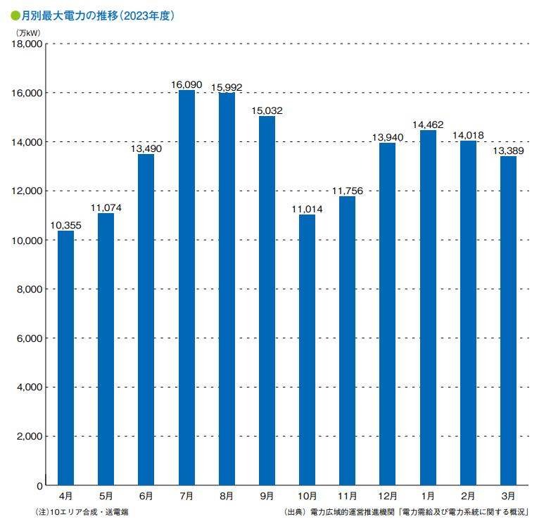

۱. نمای کلی دادهها
خلاصهای از مجموعهداده ساعتی مورد استفاده در پروژه
۲. تحلیل الگوی مصرف
نمودارهای زیر از مجموعهداده ساعتی سال ۲۰۲۵ استخراج شدهاند.
۲.۱ روند میانگین مصرف روزانه در طول سال
تجمیع دادههای ساعتی به میانگین روزانه برای مشاهده تغییرات تقاضا در طول سال.

۲.۲ مقایسه میانگین مصرف در روزهای هفته
بررسی تفاوت الگوی تقاضا بین روزهای کاری و تعطیلات آخر هفته ایران.

۲.۳ مقایسه میانگین مصرف ماهانه
تحلیل تغییرات میانگین تقاضا بین ماههای مختلف برای شناسایی الگوهای فصلی.

۳. ارزیابی مدلهای پیشبینی
مقایسه مدلها روی بخش آزمون دادهها؛ مقدار کمتر خطا نشاندهنده عملکرد بهتر است.
مقایسه عملکرد مدلها
| مدل پیشبینی | MAE (MW) | RMSE (MW) |
|---|---|---|
| مقدار قبلی (Persistence) | 21.66 | 27.55 |
| میانگین ساعتی (Hourly Average) | 18.78 | 24.69 |
| جنگل تصادفی (Random Forest) | 12.09 | 15.23 |
۵. معماری فنی و فناوریهای استفادهشده
ابزارهای مورد استفاده در پردازش داده، مدلسازی، مصورسازی و ارائه نتایج
Python
زبان اصلی توسعه
پیادهسازی منطق پردازش داده، تحلیل مصرف و اجرای مراحل مدلسازی.
Pandas & NumPy
پردازش داده
مدیریت دادههای ساعتی، محاسبه شاخصهای آماری و آمادهسازی داده برای تحلیل.
Scikit-learn
یادگیری ماشین
ساخت و ارزیابی مدل Random Forest و مقایسه دقت پیشبینی با روشهای پایه.
Matplotlib
مصورسازی داده
تولید نمودارهای روند مصرف و نمایش الگوهای روزانه، هفتگی و ماهانه.
Streamlit
داشبورد تحلیلی
ارائه رابط کاربری برای مشاهده شاخصها، تحلیلها و نتایج مدلها در نسخه اصلی پروژه.
پردازش متن فارسی
Arabic Reshaper & Python Bidi
آمادهسازی نمایش صحیح حروف فارسی و راستبهچپ در بخشهای سازگار با این ابزارها.
۴. مراحل اجرای پروژه
آمادهسازی داده
بارگذاری دادههای ساعتی و بررسی ساختار ستونها و زمانها.
اعتبارسنجی کیفیت
بررسی مقادیر گمشده، رکوردهای تکراری و نظم زمانی دادهها.
تحلیل الگوی مصرف
محاسبه شاخصهای آماری و تحلیل تغییرات روزانه، هفتگی و ماهانه.
مدلسازی و ارزیابی
مقایسه روشهای پایه با Random Forest بر اساس معیارهای خطا.